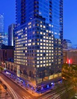
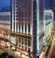
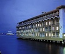
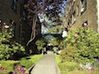
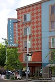

Our ceremony will be held in Queen Anne, a beautiful neighborhood just north of downtown, and our reception will be held in the Hyatt at Olive 8 in the middle of downtown, so almost any accomodations in the city will be within walking distance of both locations.
If you’d like any details about different neighborhoods or streets or want advice about any other hotel we’d be happy to help out, but we’ve also listed a few recommendations below.
Since we live here, we obviously haven’t had a chance to stay in these hotels, but these seem like good choices from what we know.
$$$
Hyatt at Olive 8
|

|
Our home! Also the location of our reception.
The Hyatt at Olive 8 is in the perfect location, right in the middle of downtown and withing walking distance of Pike Place Market, the Seattle Center, the waterfront, almost anything in the city. The first 17 floors are the hotel, and the 18th to 39th are condominiums where we live.
|
Grand Hyatt
|  |
The Grand Hyatt is just across the street from our building and many amenities are shared between the two. It has some of the best reviews in the city.
|
The Sheraton
|
The Sheraton is another nice hotel located very close to our building.
|
$$
The Roosevelt
|
The Roosevelt is also just across the block from our building, but it’s a bit older than the hotels listed above.
|
The Alexis
|
The Alexis is a bit farther away from us down near the waterfront, but it has great reviews, and it’s also a Kimpton hotel. We stayed in a Kimpton hotel recently in Portland and loved it.
|
The Edgewater
|  |
The Edgewater is also at the waterfront, or rather on the water itself. Apparently this is where the Beatles stayed when they came to Seattle, and you can request their suite if you’d like. But it’s also where Bennett and Sally stayed once when they visited, so maybe it’d be more economical to request their suite.
|
$
The Marqueen
|
The Marqueen is an economical hotel in lower Queen Anne. It’s at the foot of Queen Anne hill near our favorite grocery store. Also it’s just a quick walk up the 18% grade hill to Parsons Garden where we’re holding the ceremony.
|
The Inn at Queen Anne
|  |
The Inn at Queen Anne also seems very economical and still has pretty good reviews. It’s very close to the Seattle Center and is also quite close to the ceremony location.
|
Belltown Inn
|  |
Belltown Inn is another economical option, this time right near my old apartment in Belltown. Honestly, 3rd Avenue in Belltown is not a great place to hang out at night, but it’s not really dangerous, so if you want a less expensive hotel close to the middle of the city, this is a decent option.
|